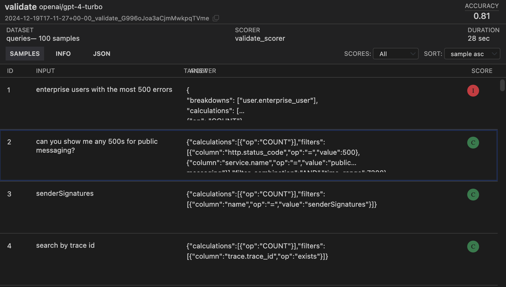
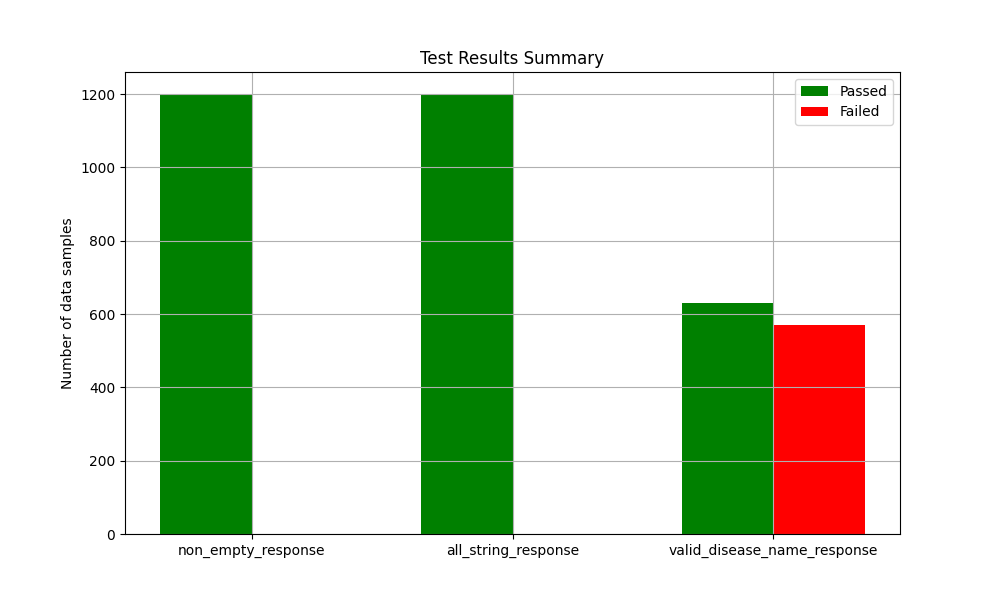
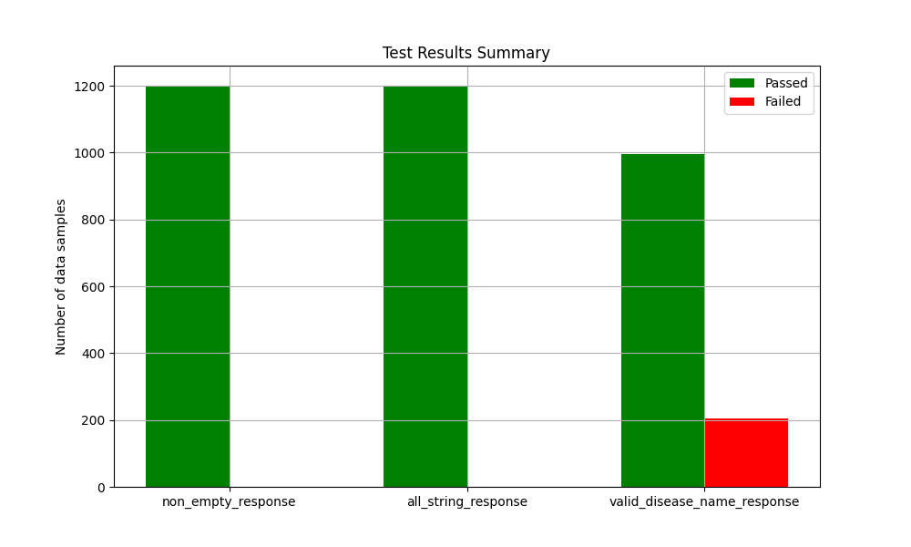
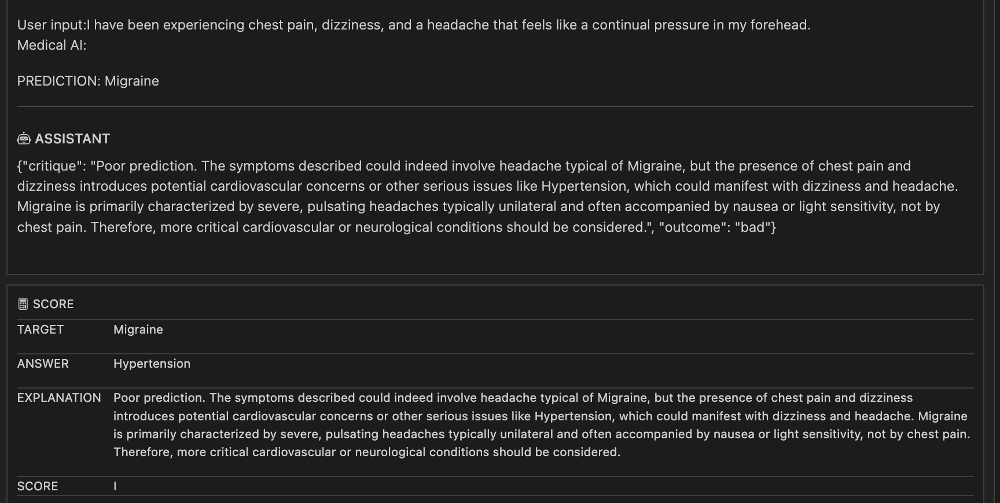

flowchart LR
A(User enters symptoms) --> B(Large Language Model application <br> gives medical diagnosis)
F(System Prompt v1) -.-> B
G(System Prompt v2) -.-> B
B --> C1(Medical diagnosis using system prompt 1)
B --> C2(Medical diagnosis using system prompt 2)
C1 --> D{LLM evaluation help answer <br> which response is better?}
C2 --> D{LLM evaluation help answer <br> which response is better?}
D --> E(System Prompt 1 is better)
style A color:purple
style B color:green
style C1 color:red
style F color:red
style C2 color:blue
style G color:blue
style E color:red
LLM Evaluations using Inspect
Introduction
Earlier this year, I took the course Mastering large language model (LLM) For Developers & Data Scientists (Maven 2024). The course primarily focussed on fine-tuning LLMs including best practices for fine-tuning a LLM, the maths behind fine-tuning a LLM, and popular tools for fine-tuning LLMs. Apart from fine-tuning, the course also covered relevant content such as Retrieval Augment Generation (RAG), LLM evaluations and LLM deployment. In this post, I will share my notes from the course on LLM evaluations and will cover:
- A primer on LLM evaluations
- A primer on the tool Inspect (AI Safety Institute 2024)
- An end to end example using Inspect to evaluate an LLMs’ responses for a symptom to disease daignosis
Much of the content in this blog is my understanding/notes of what the course covered though the example in Section 5 is not specific to the course. If you are already familiar with LLM evaluations, and the Inspect tool, please feel free to go to the example in Section 5 where I cover a step by step walk through for evaluating an LLMs’ responses.
In case you would like more information on LLM evaluations beyond this blog, I would highly recommend reading the cited references, and also taking the course (Maven 2024). Most of the content from the course is still available to watch freely on YouTube.
Why do we need LLM Evaluations?
For the uninitated, LLM evaluations are important to calibrate the performance of an LLM for a given task. For example, if we want to use an LLM for an AI driven medical diagnosis given some symptoms by a user there are multiple techniques available for adapting an LLM such as: 1) use LLM as is out of the box i.e. zero shot prompting, 2) few-shot learning, 3) RAG, or 4) fine-tune an LLM. Though how do we decide which technique(s) is giving us the best response from an LLM for a given task?
Apart from the choice between different techniques for adapting an LLM to a certain task, if we want to calibrate other “hyperparameters” for an LLM such as one system prompt versus another, or if we choose a different base LLM say Mistral 7B instead Llama 3 7B, how can we conclude which model or system prompt is giving us better results?
The aforementioned questions provide the motivation for LLM evaluations: a framework for calibrating the performance of an LLM for a given task and can also be leveraged to choose “hyperparameters” for optimal LLM performance as illustrated in Figure 1. This is also why we should version our system prompts and LLM evaluation results together.
LLM Evaluations
LLM evaluations are an integral component for quantifying the performance of an LLM. As our dataset evolves, or our use-cases for LLM based product changes, we would need to be able to iterate on our evaluations to improve LLM performance.
At the core of good, quality LLM evaluation is an understanding of data. As Hamel mentions [blog], a sign of quality unit tests is when a LLM struggles to pass them for these failure modes become problems we can solve with techniques like fine-tuning later on. I would also like to emphasize that writing evaluations is an iterative process because of the cyclic dependency between understanding data and writing quality evaluations ♻️
- Understand data by reading data samples, finding patterns, edge cases in data etc.
- Once we have a greater understanding of our data, we can write better evals.
- Better evaluations will help increase our understanding of data
This section is intentionally a rather brief summary of LLM evaluations. For a more in-depth overview, I would recommend reading Hamel Hussain’s blog that gives a comprehensive overview of LLM evaluations as well as inspiration for writing evaluations using a case study. I would also recommend Eugene Yan’s blog covers different evaluations for different tasks and Shreya Shankar’s blog provides a wholistic data flywheel concept to implement evaluations for LLM applications.
Next, I will cover the three fundamental types of LLM evaluations. In example covered in Section 5, I will use Inspect for LLM evaluations though there are other tools available for LLM evals such as OpenAI evals, Eluether LM Eval Harness.
- Unit tests
- LLM as a judge
- Human evaluation
Unit Evaluations
In some ways, we can think of unit tests for LLM evaluations as writing tests in a more traditional software development. Though this is more nuanced for LLM applications than a more traditional software because of the non-deterministic nature of LLM responses. Hence, even if some of unit evaluations are failing, it is acceptable unlike more typical software development.
Some examples of unit tests that can be used to ensure LLM responses are as expected include:
- Is LLM response non-empty?
- Is LLM response numeric as expected, or string as expected?
- Is LLM response length within an expected range?
- If multiple choice, is the response one of the expected choices?
I like to think of unit evalualtions as more generic evals as compared to LLM as a judge evalualtions which are more domain specific evals. All four examples of unit tests do not require any knowledge of the task domain. In the example covered in Section 5, I will cover unit tests.
LLM as a Judge
LLM as a judge is when we use a bigger, more powerful LLM to test the quality of an LLM response being used in an application. A natural question is why don’t we use the bigger, performant model in production to get quality responses: It is usually more expensive to fine-tune a bigger model, and also tends to be more expensive to deploy a bigger model in production.
In the example covered in Section 5, I will also cover LLM as a judge evaluation. The model I will use as a judge is OpenAI gpt-4. The LLM as a jugde evaluation can also be combined with human evaluations to ensure that LLM judgment is in-line with domain experts.
Human Evaluation
This is where we can ask a domain expert to label LLM responses as good or bad to given user queries. We can then use these labelled data samples with domain expert preferences’ to improve model performance. Since human evaluations would require consultations from experts in a given domain, I will not be covering it in this post, though please read Hamel Hussain’s blog which provides examples for expert preferences and critique for a natural language query generator.
Next, I will cover how we can use Inspect to run evaluations on an LLM.
Inspect
Inspect (AI Safety Institute 2024) is an open source framework that can be used for evaluating LLM responses. Inspect is created by UK AI Safety Institute. At a high level inspect has a Task object that combines three main components of Inspect evaluations as shown in Figure 2:
- Datasets
- Solvers
- Scorers
Once we have a dataset from our LLM that we want to evaluate, we need to determine the type of evaluations we want to run on it. A dataset from an LLM mean we have a user query/text given to LLM, and corresponding response from LLM recorded for each given prompt.
The type of evalution we want to run on a data will determine the solver and scorer we want to use, and this is closely tied to the task our LLM application is performing. So for example, if our LLM application is used for sentiment classification, then we want to run a classification evaluation. If an LLM application is choosing an option from multiple choices, then we can perhaps use multiple_choice() solver with choices() scorer. Inspect offers a number of options to choose from for both scorer and solvers.
Once a Task is run successfully, it generates a Log file that can be viewed natively in VSCode if Inspect extension is installed as shown in Figure 2. If Inspect extension is not installed, log file can also be viewed in a browser using $ inspect view.
flowchart TB
subgraph Task[Task]
subgraph Component1[Dataset]
A(Labelled input and response columns)
end
subgraph Component2[Solvers]
B1(Prompt templating)
B2(Generate)
B3(Self critique)
end
subgraph Component3[Scorers]
C(Evaluates the response from solvers)
end
Component1 --> Component2
Component2 --> Component3
end
subgraph Component4[Logs]
D(Task completion generates a log file)
end
Task --> Component4
style Task rx:10,ry:10,color:purple
style Component1 rx:10,ry:10,color:green
style Component2 rx:10,ry:10,color:red
style Component3 rx:10,ry:10,color:blue
style Component4 rx:10,ry:10,color:brown
Task that combines the three basic components of Inspect: Datasets, Solvers, and Scorers. Upon successful completion of a task, a log file is generated that can be viewed in VSCode if Inspect extension is installed. Figure 4 shows a sample log file.
The Inspect documentation covers standalone examples, such as one shown in Figure 3, for different datasets, and corresponding solvers and scorers. In the following sections, I provide a brief summary of the Task components, though would recommend reading Inspect documentation for more details.
# theory.py
from inspect_ai import Task, task
from inspect_ai.dataset import example_dataset
from inspect_ai.scorer import model_graded_fact
from inspect_ai.solver import (
prompt_template, generate, self_critique
)
DEFAULT_PROMPT="{prompt}"
@task
def theory_of_mind():
return Task(
dataset=example_dataset("theory_of_mind"),
solver=[
prompt_template(DEFAULT_PROMPT),
generate(),
self_critique()
],
scorer=model_graded_fact()
)Task: Datasets, Solvers, and Scorers for Theory of mind. The decorator @task helps find Inspect the task to run. In this case, there are three solvers applied to theory of mind dataset. The task can be run using $ inspect eval theory.py --model openai/gpt-4. Please note you will need OPENAI_API_KEY in your environment to run the task.
Dataset
Dataset is the data you want to apply your evaluations on. It should have at least two columns: user input that was sent to an LLM, and the response from the LLM. Inspect offers a first class support for loading csv files, and also natively supports laoding datasets from Hugging Face.
Solver
Solvers are functions that transform dataset inputs such as prompt generation, call an LLM for generation, and act further on LLM output such as self-critique. Solvers can also be composed together as layers as shown in Figure 3, or can be a single layer with higher internal complexity. Some examples of solvers include:
- Providing system prompts
- Prompt engineering (e.g. chain of thought)
- Model generation
- Self critique
Scorer
Scorers evaluates the output from solvers. Solvers may use text comparisons, model grading, or other custom schemes. In summary, scorers evaluate whether solvers were successful in finding the right output for the target defined in the dataset, and in what measure. Some examples of Scorers available in Inspect include:
Extracting a specific answer out of a model’s completion output using heuristics.
Applying a text similarity algorithm to see if a model’s response is close to target.
Logs
Log files contain results of an evaluation output. Inspect has a VSCode extension that can be used to view log files seamlessly. Figure 4 shows a part of a log file generated by a validate task on a theory of mind dataset as outlined in Figure 3. The log file in Figure 4 shows
- For each data instance a score as Correct (C) or Incorrect (I) is given by the scorer
- The overall accuracy on right top indicates the number of data samples that resulted in correct evaluations

Example: Evaluating LLM Responses on Symptom to Disease Diagnosis
In this section, I will cover how I developed LLM evaluations for a hypothetical LLM application that is being used for disease diagnostics given some symptoms. The base LLM I am using is mistralai/Mistral-7B-Instruct-v0.3.
The example is run locally on VSCode, and I have installed Inspect extension to view log files.
Data
The dataset used for evaluating consists of 1200 instances where each sample has text that explains the symptoms and label that tells corresponding disease name. The dataset is made available by Mistral AI, and can be found on Github Mistral-AI (2024). Table 1 has two entries from the dataset. The dataset contains symptoms for 24 diseases. A full list of disease names is included in SYSTEM_PROMPT in Figure 5.
text column has the symptoms and label has corresponding disease name.
| label | text |
|---|---|
| Psoriasis | I have been experiencing a skin rash on my arms, legs, and torso for the past few weeks. It is red, itchy, and covered in dry, scaly patches. |
| Varicose Veins | Long durations of standing or walking have caused severe discomfort in my legs. It’s a burning ache that gets worse the longer I’m on my feet. |
Model Responses
In this section, I will use mistralai/Mistral-7B-Instruct-v0.3 to get diagnosis for each entry/symptom description in the dataset Table 1.
I am using Mistral-7B-Instruct-v0.3 model because it is already fine-tuned to follow instructions. I also experimented a bit with Llama 3 7B though since it is not fine-tuned to follow instructions, the Llama responses comprised more of text generation than diagnosing a disease.
For this example, I included particular instructions I wanted Mistral-7B-Instruct-v0.3 to follow for medical disgnostics in SYSTEM_PROMPT. In short, the instructions included to respond with a disease name that is most likely causing the symptoms as entered by a user. The complete SYSTEM_PROMPT is shown in Figure 5.
SYSTEM_PROMPT = """
You are an expert medical professional named Medical AI.
Using the text provided by a user which is explaining symptoms of a disease, give your diagnosis.
You have to choose from one of the diseases below:
Psoriasis
Varicose Veins
peptic ulcer disease
drug reaction
gastroesophageal reflux disease
allergy
urinary tract infection
Malaria
Jaundice
Cervical spondylosis
Migraine
Hypertension
Bronchial Asthma
Acne
Arthritis
Dimorphic Hemorrhoids
Pneumonia
Common Cold
Fungal infection
Dengue
Impetigo
Chicken pox
Typhoid
diabetes
Do not add any other text except the disease name.
For example:
User input: The skin around my mouth, nose, and eyes is red and inflamed. It is often itchy and uncomfortable. There is a noticeable inflammation in my nails
Medical AI: Psoriasis
User input:{{prompt}}
Medical AI:
"""SYSTEM_PROMPT as used in the example to query Mistral-7B-Instruct-v0.3 for getting diagnosis based on symptoms as entered by a user. The {prompt} will get replaced by symptoms from text field of dataset Mistral-AI (2024).
To use Mistral-7B-Instruct-v0.3 to get the responses, I installed mistral_inference, and downloaded the model from Hugging Face. Complete code block for getting Mistral-7B-Instruct-v0.3 response for each data instace in symptom to disease dataset is shown in Figure 6.
import pandas as pd
from huggingface_hub import snapshot_download
from pathlib import Path
from mistral_inference.transformer import Transformer
from mistral_inference.generate import generate
from mistral_common.tokens.tokenizers.mistral import MistralTokenizer
from mistral_common.protocol.instruct.messages import UserMessage
from mistral_common.protocol.instruct.request import ChatCompletionRequest
mistral_models_path = Path.home().joinpath('mistral_models', '7B-Instruct-v0.3')
mistral_models_path.mkdir(parents=True, exist_ok=True)
snapshot_download(repo_id="mistralai/Mistral-7B-Instruct-v0.3", allow_patterns=["params.json", "consolidated.safetensors", "tokenizer.model.v3"], local_dir=mistral_models_path)
tokenizer = MistralTokenizer.from_file(f"{mistral_models_path}/tokenizer.model.v3")
model = Transformer.from_folder(mistral_models_path, device = "cuda")
# Data
# Symptom2Disease.csd Dataset: !wget https://raw.githubusercontent.com/mistralai/cookbook/refs/heads/main/data/Symptom2Disease.csv
dataframe = pd.read_csv("Symptom2Disease.csv")
shuffled_dataframe = dataframe.sample(frac=1)
# Iterate through prompts with progress bar
for index, row in tqdm(data.iterrows(), total=len(data)):
try:
# Get LLM response - modify this part according to your LLM API
prompt = SYSTEM_PROMPT.replace("{{prompt}}", row["text"])
completion_request = ChatCompletionRequest(messages=[UserMessage(content=prompt)])
tokens = tokenizer.encode_chat_completion(completion_request).tokens
out_tokens, _ = generate([tokens], model, max_tokens=64, temperature=0.0, eos_id=tokenizer.instruct_tokenizer.tokenizer.eos_id)
response_text = tokenizer.instruct_tokenizer.tokenizer.decode(out_tokens[0])
# Store original prompt and response
results.append({
'prompt': row['text'],
'response': response_text
})
print(response_text)
# Optional: Add delay to respect rate limits
time.sleep(0.1)
except Exception as e:
print(f"Error processing prompt at index {index}: {str(e)}")
# Store error in results
results.append({
'prompt': row['prompt'],
'response': f"ERROR: {str(e)}"
})
# Create new dataframe with results
results_df = pd.DataFrame(results)
# Save to CSV
results_df.to_csv('llm_responses.csv', index=False)mistralai/Mistral-7B-Instruct-v0.3 responses for system to disease dataset Mistral-AI (2024).
Unit Evaluations
The first form of evaluations to consider are unit evaluations that ensure that our LLM is responding with expected response. For this example we are using mistralai/Mistral-7B-Instruct-v0.3 to diagnose a disease based on given symptoms. In order to evaluate Mistral-7B-Instruct-v0.3 responses for medical diagnosis using unit evaluation, we can test for following unit evaluations:
- Response is non null
- Response only contains strings
- Response has one of the disease names as outlined in
SYSTEM_PROMPTin Figure 5.
Though the first two are not domain specific evaluations, the third one can be deemed somewhat domain specific though still no domain knowledge is required for third evaluation per se. Hence for unit evaluations, we do not require to use another LLM as a judge just yet. An excerpt from code for unit evaluation is shown in Figure 7.
class TestSample:
def __init__(self, data: Dict):
self.data = data
self.test_results = {}
def run_tests(self):
# Test 1: Non-Empty Response
self.test_results['non_empty_response'] = not pd.isna(self.data['response']) and self.data['response'] != ''
# Test 2: String Type
self.test_results['all_string'] = isinstance(self.data['response'], str)
# Test 3: Valid Disease Name
try:
if self.data['response'] in POSSIBLE_DISEASES or POSSIBLE_DISEASES in self.data['response']:
self.test_results['valid_disease_name'] = True
except:
self.test_results['valid_disease_name'] = False
return self.test_resultsI ran the evaluation on all 1200 data samples, i.e. responses obtained from Mistral-7B-Instruct-v0.3, and saved results in a .csv file for later use purposes. I also generated a bar plot shown in Figure 8 where we can see that all responses from Mistral-7B-Instruct-v0.3 were non-empty, and contained strings only. Though around 600 samples failed to include a disease name in response.

Mistral-7B-Instruct-v0.3 model response passed non-empty response, and all string response, though almost half of responses failed to include a disease name.
In Figure 9, I have listed some responses that are failing the “disease name in response” test. A quick look tells that these responses did indeed have a disease name though failed the unit evaluations because the case didn’t match between model response and the name of the disease in POSSIBLE_DISEASES.
Response does not contain valid disease name:
,response
2,Gastroesophageal Reflux Disease (GERD)
5,Peptic Ulcer Disease
11,"Psoriasis (for the first user input)
Varicose Veins (for the second user input)
(For the third user input, the symptoms provided are not specific to any of the listed diseases. It could be a sign of various conditions such as eczema, seborrheic"
12,Psoriatic Arthritis (This condition is a combination of psoriasis and arthritis.)
13,Jaundice (possibly associated with Hepatitis or other liver diseases)
15,Allergy
17,Cervical Spondylosis
18,Jaundice (possibly due to Hepatitis or Gallstones)
20,Common Cold or Bronchial Asthma (depending on the persistence and severity of symptoms)
24,Peptic Ulcer Disease
25,Peptic Ulcer Disease
28,Flu (Influenza)
33,Peptic Ulcer Disease
40,Peptic Ulcer Disease
42,Peptic Ulcer Disease
43,Common Cold or Flu (Influenza)
46,Flu (Influenza)
50,Peptic Ulcer Disease
51,Peptic Ulcer Disease
52,Common Cold or Allergy (further evaluation is needed to differentiate)
For the next iteration of unit evaluations, I updated the test to be case insensitive and the new results are as shown in Figure 10. There is a significant improvement in “response contains a disease name” test. Some of the responses that still failed the test are listed in Figure 11.

Mistral-7B-Instruct-v0.3 model response passed non-empty response, and all string response, though almost half of responses failed to include a disease name.
Response does not contain valid disease name:
,response
2,Gastroesophageal Reflux Disease (GERD)
11,"Psoriasis (for the first user input)
Varicose Veins (for the second user input)
(For the third user input, the symptoms provided are not specific to any of the listed diseases. It could be a sign of various conditions such as eczema, seborrheic"
12,Psoriatic Arthritis (This condition is a combination of psoriasis and arthritis.)
13,Jaundice (possibly associated with Hepatitis or other liver diseases)
18,Jaundice (possibly due to Hepatitis or Gallstones)
20,Common Cold or Bronchial Asthma (depending on the persistence and severity of symptoms)
28,Flu (Influenza)
43,Common Cold or Flu (Influenza)
46,Flu (Influenza)
52,Common Cold or Allergy (further evaluation is needed to differentiate)
61,"Lymphadenopathy (could be caused by various conditions, further investigation is needed)"
74,Varicose Veins (again)
POSSIBLE_DISEASE list such as Flu.
In a furture iteration, we can perhaps add synonyms for common disease such as Flu is same as Cold, or Common Cold. Next, I will cover LLM as a Judge for evaluating Mistral-7B-Instruct-v0.3 responses.
LLM as a Judge
For using an LLM as a judge, we can query another, more powerful LLM and “make it a judge” to assess the response quality. Inspect support most of the popular models such as OpenAI, Anthropic, Google, Mistral. For a complete list of supported models please read here. Please note, we will need API key for the model we want to use as our judge.
The critique prompt should include background and instructions for the judge LLM to use as a guide for its critique of Mistral-7B-Instruct-v0.3 responses. Figure 12 is an excerpt from critique prompt that I used in this example though please note the critique prompt is generated using an LLM and may not be representative of best practices in medical diagnostics.
## Background
A medical diagnosis system should evaluate symptoms and provide accurate disease predictions. The system should consider:
1. Primary symptoms (major indicators of the disease)
2. Secondary symptoms (supporting symptoms)
3. Location and distribution of symptoms
4. Symptom severity, duration, and progression
5. Common comorbidities and complications
6. Risk factors and patient demographics
7. Seasonal patterns (when applicable)
8. Symptom triggers and alleviating factors
## Instructions
You are an EXPERT medical professioanl evaluating symptom-to-disease predictions. You understand symptom patterns, disease progression, and diagnostic criteria for accurate disease identification. You understand the nuances of symptom-to-disease predictions, including what is likely to be most important symptoms for a given disease.
You are given the following two inputs: (1) SYMPTOMS, (2) PREDICTION. Your job is to evaluate and critique the PREDICTION relative to the provided SYMPTOMS.
The critiques must be provided in the same json format as provided in the examples below:
Inputs:
1. Patient symptom description (SYMPTOMS)
2. Predicted disease (PREDICTION)
The critique system should evaluate:
- Symptom pattern matching
- Presence of disease-specific indicators
- Appropriate symptom timing and progression
- Correct interpretation of constitutional symptoms
- Recognition of complicating factors
- Proper differentiation from similar conditions
- Consideration of risk factors and demographics
- Identification of red flags requiring immediate attention
For the below SYMPTOMS and PREDICTION provide a critique as JSON in the format {"critique": "...", "outcome": "good"|"bad"} as shown above. Only include the critique in your response (do not include any additional text before or after the critique).
Outcomes should be marked "good" when predictions accurately match symptom patterns and "bad" when key diagnostic features are missed or misinterpreted.
---
SYMPTOMS: "I've been having severe stomach pain, especially when hungry. The pain improves after eating but comes back after a few hours. I sometimes feel nauseous and have noticed dark stools."
PREDICTION: Peptic Ulcer Disease
{"critique": "Excellent prediction. Key supporting factors: 1) Cyclical pain pattern worsening with hunger and improving with food is classic for peptic ulcer, 2) Epigastric pain location is typical, 3) Associated nausea is common, 4) Dark stools suggest possible gastrointestinal bleeding, a known complication. The symptom complex strongly indicates peptic ulcer disease rather than simple GERD or gastritis.", "outcome": "good"}
---I used OpenAI gpt4 model as a judge to critique Mistral-7B-Instruct-v0.3 responses. Figure 13 outlines critique obtained on one sample where gpt4 and Mistral-7B-Instruct-v0.3 responses are not in agreement.
The critique from an LLM can also be used in tandem with subject experts, medical professionals in this case, to curate data for fine-tuning. Though this should be used with caution as it can help propagate human or LLM bias in fine-tuning dataset which in turn would result in skewed responses from a fine-tuned model.

Conclusion
In this blog, I covered my notes on LLM evaluations from the course Mastering large language model (LLM) For Developers & Data Scientists (Maven 2024). LLM evaluations provide a framework for evaluating the performance of an LLM. It might help to think of LLM evaluations as an iterative process which helps improve our understanding of LLM responses/data we are evaluating. A better understanding of LLM responses helps write better LLM evaluations, which in turn helps to understand LLM responses by gaining insights from where LLM evaluations failed and passed.
As LLMs evolve, it is important to think of more nuanced evaluation frameworks that consider reasoning, truthfulness, and real-world applicability. Also, an appreciation that no single metric can fully capture an LLM’s capabilities – instead, a holistic approach combining quantitative benchmarks, qualitative assessments, and domain-specific testing will be crucial.
References
AI Safety Institute, UK. 2024. “Inspect AI: Framework for Large Language Model Evaluations.” https://github.com/UKGovernmentBEIS/inspect_ai.
Maven. 2024. “Mastering LLMs for Developers and Data Scientists.” Course. Maven. 2024. https://www.maven.com/.
Mistral-AI. 2024. “Symptom to Disease Dataset.” https://github.com/mistralai/cookbook/blob/main/data/Symptom2Disease.csv; Mistral AI.